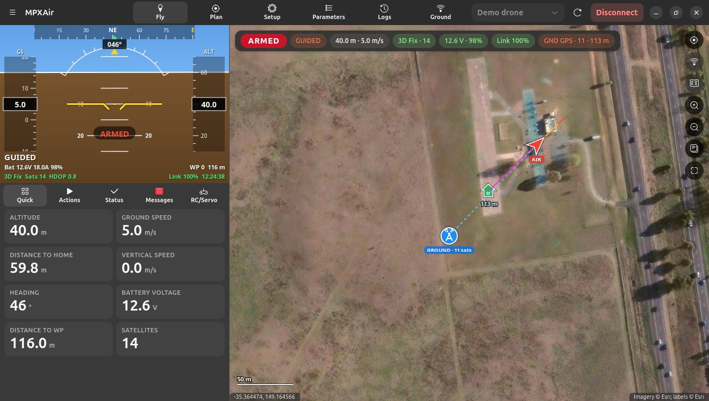
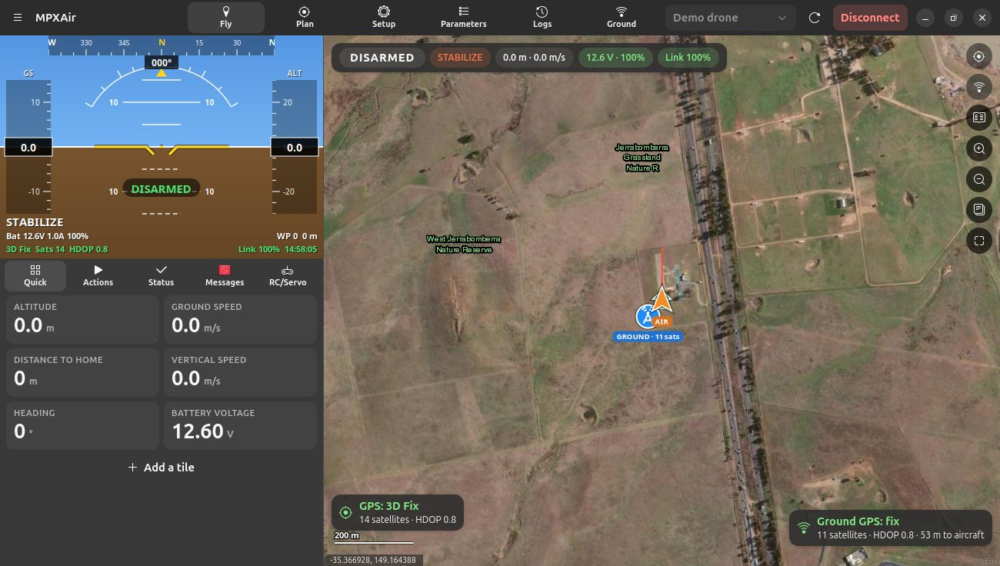
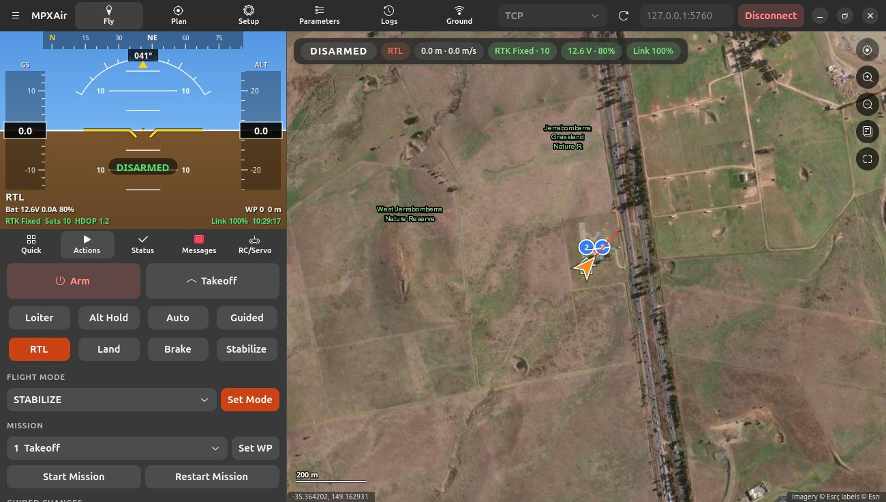
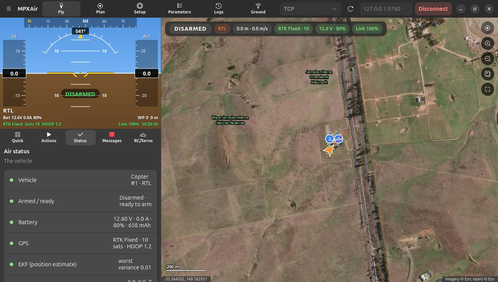

Fly screen
Everything you need while the aircraft is flying: the HUD, the map, live numbers and quick actions.

HUD
The artificial horizon at the top left works like Mission Planner's:
- Horizon and pitch ladder: the aircraft's roll and pitch.
- Heading tape along the top. A green marker shows the bearing to the current target.
- Speed tape (left) and altitude tape (right, height above home). A climb-rate bar is on the right edge.
- ARMED / DISARMED in the middle, plus NO TELEMETRY if the link drops.
- Along the bottom: flight mode, battery, GPS, distance to the waypoint, link quality and the time.
- Warnings in orange or red: VIBE (vibration), EKF (position estimate) and PREARM (not ready to arm).
The map
- AIR: the aircraft, as a red arrow when armed, with a heading line and a target-bearing line.
- GROUND: your ground station, as a blue antenna badge with its satellite count. A dashed line joins it to the aircraft, labelled with the distance.
- H: home. The mission, geofence and rally points are drawn too.
- Trail: where the aircraft has been. It keeps the last 20 seconds by default and older track fades out. Change this with Trail on map keeps on the Actions tab, or in Preferences.
- Aircraft GPS card (bottom-left), as in Mission Planner: fix type, satellites and HDOP, green, orange or red by quality.
- Ground GPS card (bottom-right): the ground station's fix, satellites, HDOP and distance to the aircraft. If the ground GPS loses its fix, the GROUND marker stays at its last known position, greyed, with "no fix · last … ago".
- Status chips (top): armed state, mode, altitude and speed, battery and link quality.

GPS fix types
| Shown as | Meaning |
|---|---|
| No GPS / No Fix | No GPS detected, or not enough satellites yet. |
| 2D Fix | Position but no reliable altitude. Not good enough to fly in position modes. |
| 3D Fix | A full position. The minimum for Loiter, RTL and missions. |
| 3D Fix + DGPS | A 3D fix improved with correction signals from SBAS satellites (WAAS in North America, EGNOS in Europe, and so on). This is better than a plain 3D fix, and it's normal to see it for the whole flight. |
| RTK Float / RTK Fixed | Centimetre-level positioning with an RTK base station. |
The fix type alone isn't everything. Also check the satellites (10 or more is good) and HDOP (below 1.5 is good). ArduPilot refuses to arm with PreArm: High GPS HDOP until the HDOP is low enough.
Map buttons (right side)
| Button | What it does |
|---|---|
| Follow | Keeps the map centred on the aircraft. |
| Ground station | Shows or hides the ground station on the map. |
| Keep both in view | Frames the aircraft and the ground station together and follows both. |
| Zoom + / − | Zoom. The scroll wheel and touchpad pinch work too. |
| Map type | Satellite, street, topographic… and offline maps. |
| Fit mission | Shows the whole mission. |
Right-click menu
Fly to here (guided), Fly to here at altitude…, Point camera here, Set home here, Measure distance from here, Centre map here, Set ground station position here and Copy coordinates.
Quick view
Big, easy-to-read numbers. You can have 2 to 16 tiles.
- Click a tile to choose what it shows, from 45 values in sections: height and position, speed and attitude, navigation, battery, GPS and health, telemetry link, and ground station.
- Add a tile is at the bottom. Remove this tile is in each tile's menu.
Useful extras include Distance flown, Power (W), Fade margin, Radio RSSI (aircraft), Distance / bearing / elevation from ground and Vibration.
Actions

- Arm / Disarm. If arming is refused, MPXAir shows the aircraft's reason and offers Force Arm for experts.
- Takeoff. Switches to GUIDED, arms and climbs to the height you enter. Planes switch to TAKEOFF mode instead.
- Mode buttons for the common modes, plus a list of every mode.
- Mission: Set WP, Start Mission, Restart Mission.
- Guided changes: change speed and altitude.
- Vehicle:
- calibrate the gyro or barometer, reboot, trigger the camera;
- Set Home Here, Clear Track, and the trail length.
Status

Air status covers the vehicle, armed and ready, battery, GPS, EKF, vibration, telemetry link, SiK radio RSSI and noise, home, flight time, wind and firmware.
Ground status covers your position and its source, the aircraft's distance, bearing and elevation from you, the laptop battery, map server and internet status, telemetry recording, data rates, Follow Me and the antenna tracker.
Each row has a green, orange or red dot.
Messages and RC/Servo
Messages lists everything the autopilot says, colour-coded (errors in red, warnings in orange). Important errors also pop up as a notification. RC/Servo shows the 16 radio inputs and 16 outputs as live bars.